A doença das mãos, pés e boca (HFMD = Hand, Foot, and Mouth Disease) é uma doença viral comum que afeta principalmente bebês e crianças menores de 5 anos, embora também possa ocorrer em crianças mais velhas e adultos. A doença é normalmente causada pelo Coxsackievirus A16 ou Enterovirus 71 (EV71). Quando causada pelo Enterovirus 71 (EV71) tem sido associada com significante morbidade e fatalidades. A maioria dos casos afeta crianças menores de 10 anos, embora casos em adultos sejam relatados.
Além disso, casos esporádicos com os tipos de vírus Coxsackie A4-A7, A9, A10, B1-B3, B5 têm sido relatados. As infecções geralmente ocorrem como eventos isolados, mas as epidemias ocorrem regularmente. Um surto na China em 2003 foi causado pelo Echovirus 19.
Manifestações clínicas
A HFMD é caracterizada pelos seguintes sintomas:
Febre: Frequentemente o primeiro sinal, geralmente leve a moderado.
Dor de garganta: Dor ou desconforto na garganta.
Erupção cutânea: manchas vermelhas ou bolhas nas palmas das mãos, plantas dos pés e, às vezes, nas nádegas.
Feridas na boca: úlceras dolorosas na boca, geralmente na língua, gengivas ou na parte interna das bochechas.
Perda de apetite: Devido a feridas na boca e dor de garganta.
Irritabilidade: Especialmente em crianças mais novas.
Há breve pródromo de 12-36 horas de duração que consiste de: febre baixa, com uma temperatura média de 38,3 ° C e duração de 2-3 dias, anorexia, mal-estar, dor abdominal, dor na boca e tosse. Em um estudo, 80% das crianças apresentaram-se com anorexia e dor na boca. As lesões bucais se iniciam como máculas eritematosas que evoluem para vesículas com 2-3 mm de base eritematosa. As vesículas são raramente observadas, porque rapidamente ulceram. São dolorosas e podem interferir com a alimentação. O número médio total de úlceras é de 5-10. As vesículas podem envolver o palato, mucosa bucal, gengiva e língua. A língua está envolvida em 44% dos casos, e, além de úlceras, a língua pode ser edematosa e macia.
O enantema geralmente precede o exantema que é assintomático, mas ambos podem ocorrer simultaneamente. As lesões nas mãos e pés estão presentes durante 5-10 dias. As lesões da mucosa e da pele curam espontaneamente em 5-7 dias. Podem ser observadas vesículas ovais típicas com seu longo eixo acompanhando os dermatóglifos nas palmas, plantas, dorso das mãos e em torno das unhas dos dedos das mãos e pés em 75% dos pacientes.
Lesões cutâneas são características e estão presentes em dois terços dos pacientes. Tipicamente, as mãos, pés e nádegas estão envolvidas. As mãos são mais acometidas do que os pés, sendo o dorso e as laterais dos dedos mais atingidos do que a superfície palmar. Cada lesão começa como uma mácula eritematosa 2-10 mm na qual uma vesícula central, , cinza oval se desenvolve. As lesões são caracteristicamente elípticas; seu longo eixo é paralelo à linha da pele. Estas lesões são assintomáticas e se resolvem em 3-7 dias, como resultado da reabsorção de líquidos. Erupção maculopapular eritematosa pode ocorrer também nas nádegas e braços. Em um relatório, 22% dos pacientes também tinham marcada linfadenopatia cervical ou submandibular.
Transmissão
A HFMD é altamente contagiosa e se espalha através de:
Contato direto com saliva, secreções nasais, fluido de bolhas ou fezes de uma pessoa infectada.
Gotículas respiratórias provenientes de tosse ou espirro.
Superfícies ou objetos contaminados.
Durante as epidemias, o vírus é transmitido através de transmissão horizontal de criança para criança e da mãe para o feto. A transmissão ocorre por meio de contato direto com secreções nasais ou orais, material fecal, ou gotículas de aerossol em uma rota fecal-oral ou oral-oral. A implantação viral inicial na mucosa bucal e ileal é seguida por disseminação para os nódulos linfáticos em 24 horas. Uma viremia rapidamente se segue, com difusão para a mucosa oral e pele. No 7 º dia, os níveis de anticorpos aumentam neutralizando os vírus que são eliminados.
Prevenção
Não existe vacina específica para a HFMD (exceto em algumas regiões onde as vacinas EV71 estão disponíveis). A prevenção centra-se na higiene: Lavagem das mãos: Lavagem frequente e completa das mãos com água e sabão.
Desinfecção: Limpeza e desinfecção de superfícies e brinquedos.
Evite contato próximo: Manter os indivíduos infectados longe de escolas, creches ou locais públicos.
Higiene pessoal: Evitar tocar no rosto, principalmente boca, nariz e olhos.
O vírus pode estar presente nas fezes do paciente por um mês. Para reduzir a propagação viral, não romper as vesículas .
Tratamento
Não existe tratamento antiviral específico para HFMD. O manejo se concentra no alívio dos sintomas:
Hidratação: Garantir a ingestão adequada de líquidos para prevenir a desidratação.
Alívio da dor: analgésicos de venda livre, como paracetamol ou ibuprofeno, para febre e dor.
Tratamentos tópicos
Enxaguatórios bucais ou sprays para aliviar feridas na boca.
Descanso: Incentivar o descanso para apoiar a recuperação.
Complicações
A maioria dos casos de HFMD são leves, mas podem ocorrer complicações, especialmente com infecções por EV71. Estes incluem:
Desidratação: Devido a feridas dolorosas na boca e dificuldade em engolir.
Meningite viral: Inflamação das membranas ao redor do cérebro e da medula espinhal.
Encefalite: Inflamação rara, mas grave, do cérebro.
Alterações nas unhas: Perda temporária das unhas (onicomadese) semanas após a recuperação.
Situação Mundial. A HFMD é mais comum em regiões tropicais e subtropicais, com surtos ocorrendo frequentemente em países da Ásia-Pacífico (por exemplo, China, Vietnã, Malásia). Os picos sazonais são normalmente observados na primavera e no verão. A doença mão-pé-e-boca é mais grave em lactentes e crianças do que adultos, mas, geralmente tem um curso suave. Infecções por enterovírus também podem causar pneumonia, miocardite, meningoencefalite, e até a morte. Raramente, a doença reaparece. Infecção no primeiro trimestre pode levar a abortos espontâneos ou retardo do crescimento intra-uterino.
Um grande surto em Taiwan causado pelo enterovírus 71 teve uma alta taxa de mortalidade de 19,3% nos casos graves; as mortes resultaram de hemorragia pulmonar. Durante este surto, as taxas de mortalidade foram mais elevadas em crianças menores de 3 anos.
Em um grande surto epidêmico (138 casos) relacionado com enterovírus 71 em Cingapura, ocorreram 7 mortes, a maioria de pneumonite intersticial ou encefalite de tronco encefálico. As conclusões do relatório foram de que, em geral, é uma doença benigna, mas a presença de achados físicos incomuns, elevada contagem total de células brancas do sangue, vômito e a ausência de úlceras orais pode significar um paciente com maior risco de um desfecho fatal.
Desenvolvimentos recentes.
Vacinas EV71: Em alguns países (por exemplo, China), foram desenvolvidas vacinas direcionadas ao EV71 e estão a ser utilizadas para reduzir casos graves.
Vigilância: Aumento da monitorização e notificação de casos de HFMD em regiões endêmicas para controlar surtos.
Pesquisa: Estudos em andamento para compreender melhor o vírus e desenvolver vacinas mais amplas.
Se você suspeitar de HFMD, consulte um médico para diagnóstico e tratamento adequados. Manter uma boa higiene e evitar o contacto próximo com indivíduos infectados são fundamentais para prevenir a sua propagação.
REFERÊNCIAS BIBLIOGRÁFICAS
1. Hand, Foot, and Mouth Disease: A Narrative Review. Leung AKC, Lam JM, Barankin B, Leong KF, Hon KL.
Recent Adv Inflamm Allergy Drug Discov. 2022;16(2):77-95.
2. Hand, foot, and mouth disease in pregnancy: 7 years Tuscan experience and literature review. Giachè S, Borchi B, Zammarchi L, Colao MG, Ciccone N, Sterrantino G, Rossolini GM, Bartoloni A, Trotta M. J Matern Fetal Neonatal Med. 2021 May;34(9):1494-1500.
3. Vaccine for hand, foot, and mouth disease (HFMD): A call to action. Gam PH, Dung NM, Aziz JMA, Makram AM, Elsheikh R, Huy NT. Vaccine. 2025 Jan 12;44:126491.
4. Effectiveness of the enterovirus A71 vaccine on hand, foot, and mouth disease: a real-world study in China. Liu Y, Song Y, Liu F, Chen Y, Liu Y, Shi J, Li K, Yin Y, Liang Q, Liu N, Ming M, Hua L, Shi Q, Xu J, Yuan R, Li S, Zhang L, Zhao Y, Wang N, Zhang J, Zhang Y, Chang Z, Zhang Z. Clin Microbiol Infect. 2025 Feb;31(2):258-265.
5. Eczema Coxsackium: Atypical Manifestations in the Comorbidity of Atopic Dermatitis With Hand, Foot, and Mouth Disease Caused by Coxsackievirus A6 in a Pediatric Case. Zhao M, Li X, Ma L. Dermatitis. 2025 Jan-Feb;36(1):e97-e98.
Atlas de imagens 24


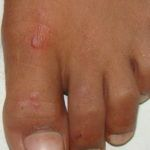

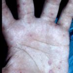

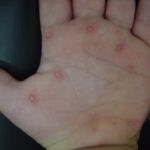

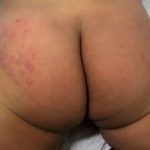

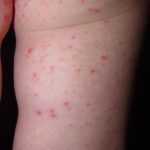

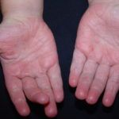

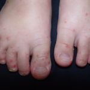

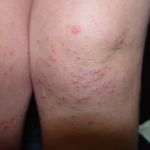

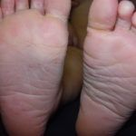

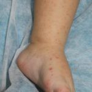

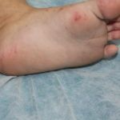

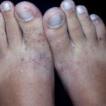


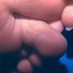

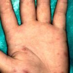

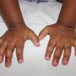

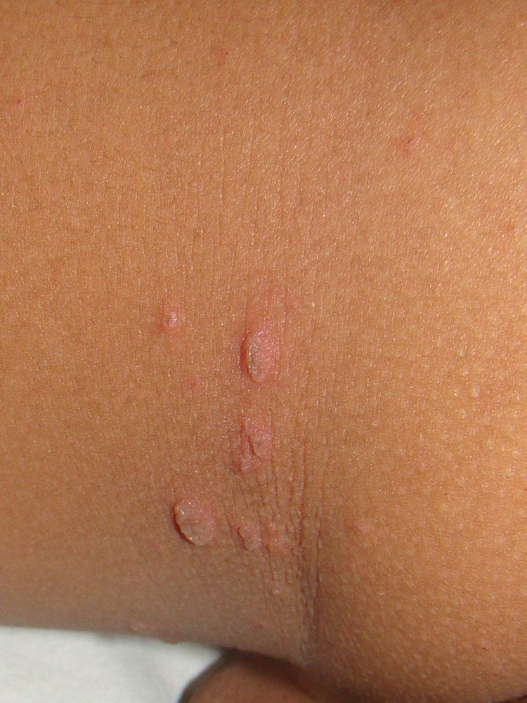

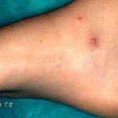


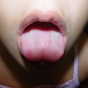

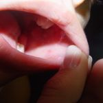

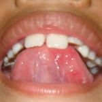

Na Skin Prime
Como podemos ajudar
O texto sobre Doença Mão, Pé e Boca não cita procedimentos específicos entre os oferecidos pela clínica. A conduta é definida em consulta: nossa equipe avalia as manifestações na pele e orienta o tratamento ou o encaminhamento adequado.